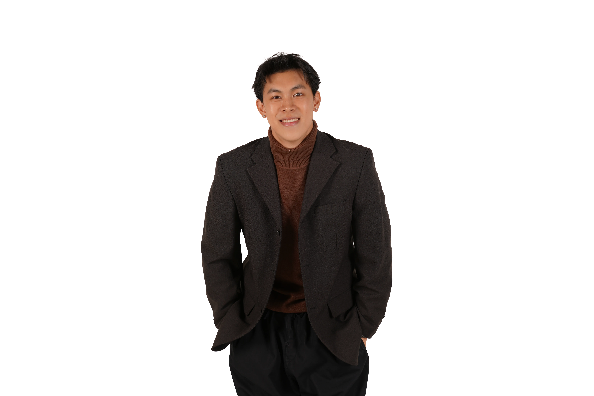

大學
工業設計學系
國立成功大學
高中
英語國際部
國立政治大學附屬高中（NCCU）
英文能力：精通（雅思學術類：7.0）
工作經歷
工業設計實習生（2025/7–2025/8）
統亞科技電子股份有限公司
利用兩個月的時間，完成三隻機車方向燈的設計。中間涵蓋設計、機構組合設計、脫模與肉厚設定。
主要經歷
教育部海外藝術與設計菁英培訓計畫
接待組組長 · 活動部
擔任國際教授的第一線接待窗口，在主辦單位與來賓之間扮演重要的溝通橋樑。
工作坊
未來十年的城市設計
日本 R.F.YAMAKAWA CO.,LTD. 工作坊
以「未來十年的大學校園」為主題，用微型移動座艙＋據點式營運的方式改善校園中日益加劇的高溫步行體驗。
工作坊 · 2025
Design from the Perspective of Loneliness / Social Distance
日本九州大學 × 成功大學設計工作坊
重新設計公園與高齡聚會場所，利用經驗分享會、棋弈、主題之夜，解決高齡者面對失眠時，夜晚孤獨無去處、沒有歸屬感的問題。
主要經歷
2026屆工業設計畢業展
交流部長
邀請設計界專業人士支持學生畢業作品，並籌辦交流活動以促進創意思維的碰撞。
其他經歷
滑雪教練（NZSIA 認證，紐西蘭）
« L'éthique, c'est l'esthétique du dedans. »
"Ethics is the aesthetics of the soul."